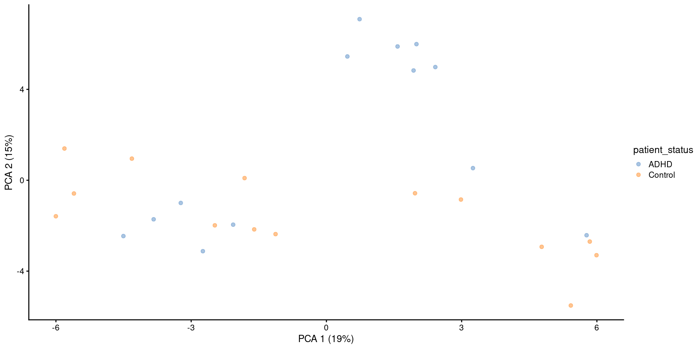
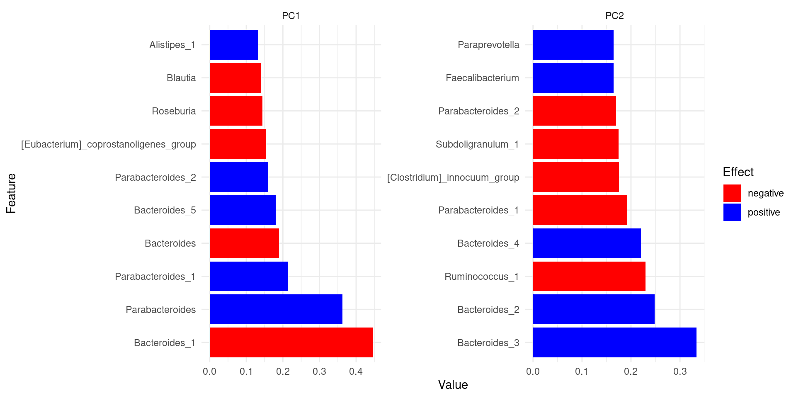
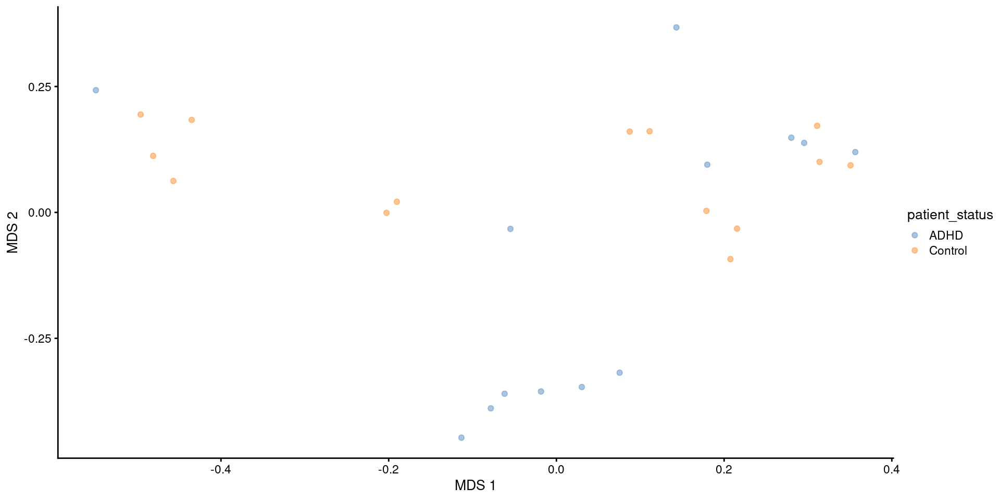
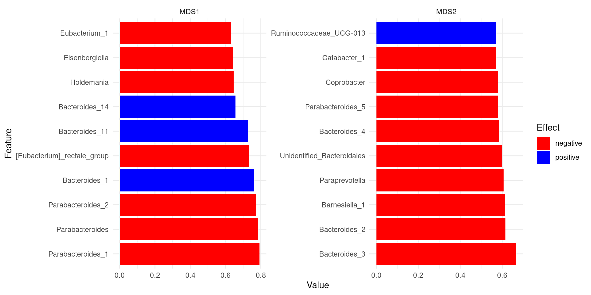
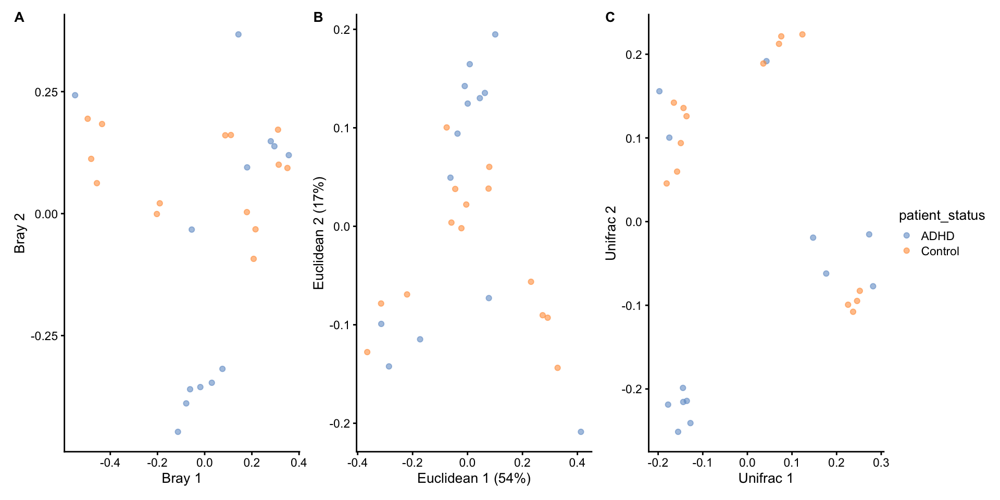

Multivariate analysis
Multivariate analysis
- Multiple variables
- Different methods
- Ordination-based methods
- Clustering
- Classification, …
Ordination
- Beta diversity: diversity between microbial communities
- Simplify and visualize high-dimensional data
- Projects data into lower dimensional latent space

Matrix factorization
- Decomposes complex data into components
- Widely used and general technique
- Methods vary based on goals and constraints
Ordination methods
- Different methods
- PCA, PCoA/MDS, RDA, …
- Euclidean/non-Euclidean
- Unsupervised/supervised
Principal component analysis (PCA)
- Goal: Maximize the variance
- Euclidean distance
- Aitchison distance: CLR + Euclidean distance
Example 1.1: PCA
First we load an example dataset and apply robust clr transformation.
Then we perform PCA with runPCA()function available in scater package.
We can retrieve a list of all reduced dimensions with reducedDims().
If you need only their names, these can be accessed with reducedDimNames().
And the results can be accessed with reducedDim(tse, "PCA").
PC1 PC2 PC3 PC4 PC5 PC6
A110 -4.5035339 -2.456547 -2.11328100 -3.8634688 2.0123949 -0.3325532
A12 2.4156363 4.982008 -0.07545471 0.1898264 -1.3925704 1.2237517
A15 -2.7404749 -3.121391 -4.46833577 8.1698047 -2.5837119 -2.1243919
A19 0.7358807 7.090486 -1.00797353 -1.2989823 0.1064523 -3.3824751
A21 0.4648846 5.448022 -1.14685965 -0.8743427 1.2143298 -4.4323282
A23 -2.0686346 -1.954092 -2.61287624 -2.5249816 -3.0007937 -2.4024629
PC7 PC8 PC9 PC10 PC11 PC12
A110 -0.8342411 1.0193914 -4.2216208 1.1932256 0.172707622 -2.3565927
A12 -0.3055218 0.7968376 0.4988079 2.7782003 0.551278116 0.4895880
A15 -1.3546507 1.5617929 -0.7468926 -0.7977925 -0.002285458 -1.9595096
A19 1.4979577 0.1788277 -0.9825262 -2.3851223 -2.018251650 -1.4132247
A21 1.6593740 0.5619416 0.6748281 -0.2531164 -1.974152848 0.7930157
A23 -2.5300350 -3.0190698 3.9427392 0.2632914 1.180388830 0.3831161
PC13 PC14 PC15 PC16 PC17 PC18
A110 0.2449630 -1.2664497 1.4364113 0.89583856 0.8365374 0.4457789
A12 -1.4948351 -2.5473097 -0.8648291 -1.48252017 -0.7839398 0.1476567
A15 0.4154040 -0.2455156 0.1621916 0.33095787 -0.7875945 -0.0824129
A19 0.1953649 0.9069244 0.2419303 0.38847386 1.4955734 0.3421782
A21 -1.2728108 0.7827710 -0.8452163 -0.58884502 -1.9694914 -0.5016079
A23 -0.8302655 -0.2890572 2.1834383 0.09925442 0.3728412 -1.4058642
PC19 PC20 PC21 PC22 PC23 PC24
A110 0.987010794 -1.0053150 -0.9899730 0.8829111 -0.2200736 -0.2975089
A12 0.114383997 0.5743782 -1.9702511 -0.4000117 -0.2989457 -1.0332134
A15 -0.517904963 0.1558602 -0.2901768 -0.1773831 -0.4550756 -0.1875868
A19 0.480395457 1.3345829 0.8691778 -0.5697885 0.2015948 -0.7871444
A21 0.006978105 -1.8347856 -0.6948813 0.4662380 -0.3698014 0.5050710
A23 0.516079026 -0.8406535 0.3192697 0.3128884 -0.1924474 -0.2425484
PC25 PC26
A110 -0.60890560 -0.20643929
A12 0.51342549 -1.06913557
A15 -0.04222125 0.01149364
A19 1.10441000 -0.77053190
A21 -1.05782664 0.59576805
A23 0.74942196 -0.01116033Example 1.2: Visualize PCA
PCA or other ordination results are usually visualized with scatter plot.
Example 1.3: PCA contributors
Some taxa contribute more than others to the generation of reduced dimensions.
Exercises 1: PCA
- 29.7.1 Reduced dimensions retrieval
- 29.7.2 Visualization basics with PCA
Principal coordinate analysis (PCoA)
- Goal: Preserve the dissimilarity structure
- Non-Euclidean
- Different dissimilarity metrics
When Euclidean distance is used, PCoA reduces to PCA.
Example 2.1: PCoA
We transform the counts assay to relative abundances and store the new assay back into the TreeSE.
Here, we run PCoA on the relative abundance assay to reduce the dimensionality of the data. We set method to Bray-Curtis dissimilarity.
We can see that now there are additional results in reducedDim.
Example 2.2: Visualize PCoA
Similarly to PCA, we can visualize PCoA with scatter plot.
Example 2.3: PCoA contributors
Loadings of PCoA cannot be interpreted as directly as PCA: “features that contribute the most to dissimilarity”.
Instead, we can calculate correlation between abundances and coordinates.
Show code
# Compute correlation between features and reduced dimensions
comp_loads <- apply(
assay(tse, "relabundance"),
MARGIN = 1, simplify = FALSE,
function(x) cor(x, reducedDim(tse, "MDS"), method = "kendall")
)
# Prepare matrix of feature loadings
taxa_loads <- do.call(rbind, comp_loads)
colnames(taxa_loads) <- paste0("MDS", seq(ncol(taxa_loads)))
rownames(taxa_loads) <- rownames(tse)The top PCoA loadings for the first two dimensions are visualised below.
Exercises 2: PCoA
- 29.7.3 Principal Coordinate Analysis (PCoA)
Redundancy analysis (RDA)
- Supervised
- How much covariate explains the differences in microbial profile?
- Two steps
- Principal Coordinate Analysis (PCoA)
- Maximizes the variance explained by covariates
Example 2.1: dbRDA
We can apply dbRDA with runRDA() function. formula tells how the method is applied; here “patient_status” and cohort are the explanatory variables.
Example 2.2.: Visualize dbRDA
We can visualize dbRDA results with plotReducedDim() or plotRDA() which have additional features.
Exercises 3: dbRDA
- 29.7.5 Redundancy analysis (RDA)
- 29.7.6 Beta diversity analysis
Extra:
Find the top 5 contributor taxa for principal component 1.
Example 3.1: Other Distances
A different distance function can be specified with FUN, such as phylogenetic distance.
The number of dimensions to visualise can also be adjusted with ncomponents.
Example 3.2: Comparison
Different ordination methods return considerably different results, which can be compared to achieve a better understanding of the data.
Exercise 3
Run MDS on the CLR assay with Euclidean distance and compare the results with the previous PCoA and PCA.
Extra:
Make a plot with the first three dimensions, and a plot with the second and fourth dimensions.